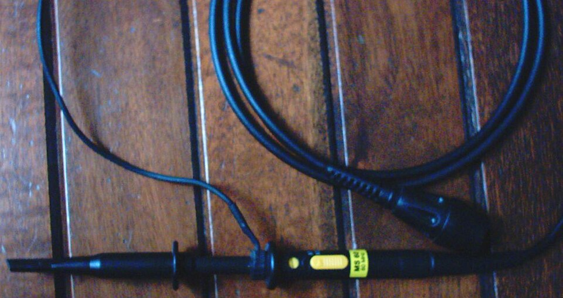

Switch a relay coil and inspect its turn-off pulse
Measure a low-voltage coil, select a transistor and clamp, then confirm the output and relay contacts on a protected trainer.
Choose a small DC coil and protect the switch
Use a small documented 5 V DC relay with coil resistance of 100–200 Ω, a 2N2222-family transistor with verified supplier pinout, a 680 Ω base resistor, a 10 kΩ base pulldown, and a 1N400x diode. Set an isolated supply to 5 V with a limit of about 85 mA. Label the coil pins from the relay drawing and measure their resistance disconnected. At 125 Ω the steady expectation is 40 mA. Keep relay contacts on the meter’s unpowered continuity circuit.
- Connect emitter to return, collector to one coil end, and the other coil end to +5 V. Fit the diode across the coil, striped cathode to +5 V, before you energise it.
- Fit the 10 kΩ from base to return and switch 5 V to the base through the 680 Ω resistor. Compare supply current and collector voltage in each state. Use a second meter in continuity mode across the isolated COM and NO contacts.
- Probe the collector with a compensated 10× probe and a ground connection only at the isolated trainer return. Trigger on the rising collector edge, use single capture and release the switch. The coil current initially continues and the diode conducts. The nominal clamp is slightly above +5 V at the collector.

Photo by Sarah Adrita, scaled for the course. Original photo · CC BY-SA 4.0.


Photo by Severino666, with on-page callouts. Original photo · Public domain.

Tektronix shows passive probe compensation before your measurement.
Separate a command, a coil and a contact
A high base drive with little supply current and a low collector suggests checking the coil path. Coil current with no contact change sends you to the relay path or contact identification. Disconnect power before simulating an open coil with one lead removed, and restore the clamp when rebuilding. Keep the diode installed for all scope captures. Higher-voltage clamp topologies trade faster coil release for higher stress and need specified parts before use.
Keep one annotated scope capture, plus a four-row log of commanded and released states and their measured contact. See P79 · Distinguish a fan command from proof of airflow for why a controller’s run command still needs independent physical proof.